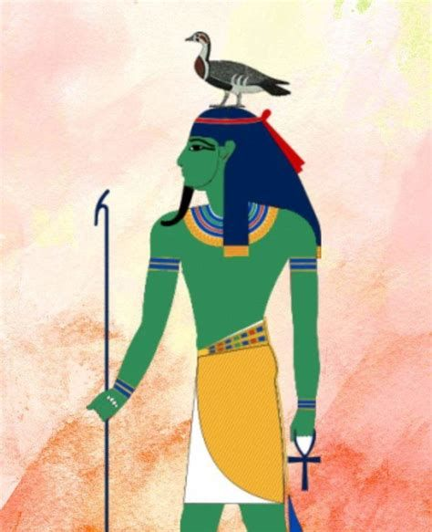

| Dieux |
Traduction |
Ligné |
Rôle |
Symboles |
Représentation |
Mythes |
| AMON |
 |
|
Dieu du vent |
Oie et serpent |
|
|
| ANUBIS |
 |
Fils de Osiris et Isis .
Frère d' Horus et Oupouaout .
Père de Qébéhout . |
Dieu des morts |
Noir et canidé |
|
|
| BASTET |
 |
Fille de Rê . |
Déesse des naissances |
Chat, couteau, panier et sistre |
|
|
| BES |
 |
|
Dieu protecteur de la fertilité |
|
|
|
| GEB |
 |
Fils de Shou et Tefnout .
Frère et époux de Nout .
Père de Seth , Nephtys , Isis et Osiris . |
Dieu der la terre, des plantes et des minéraux |
Oie, terre, minéraux, plante et vert |
 |
|
| HATHOR |
 |
Fille de Rê . |
Déesse de l'amour, de la musique et de la beauté |
Vache, ménat, disque solaire et turquoise |
|
|
| HORUS |
 |
Fils de Osiris et Isis .
Frère d' Anubis et Oupouaout .
Père de Harsomtous . |
Dieu du ciel et protécteur des pharaons |
Oeil oudjat |
|
|
| ISIS |
 |
Fille de Geb et Nout .
Soeur de Nephthys et d' Osiris .
Femme d' Osiris .
Mère d' Anubis , Oupouaout et Horus . |
Déesse de la vie |
Vache, chien, trône et sistre |
|
|
| MAAT |
 |
Fille et femme de Rê . |
Déesse de la justice, de l'ordre, de la paix et de la vérité |
Plume d'autruche et blanc |
|
|
| NEITH |
 |
|
Déesse de la guerre |
Flêche sur bouclier |
|
|
| NEPHTHYS |
 |
Fille de Seb et Nout .
Soeur de Osiris , Isis et Seth .
Femme de Seth . |
Déesse protectrice des morts |
Faucon |
|
|
| NOUT |
 |
Fille de Tefnout et Shou .
Soeur de Geb .
Femme de Seb .
Mère de Osiris , Isis , Seth et Nephthys . |
Déesse du ciel |
Bleu |
|
|
| OSIRIS |
 |
Fils de Geb et Nout .
Frère d' Isis , Seth et Nephthys .
Père d' Annubis . |
Dieu de l'agriculture et de l'au delà |
Sceptre, couronne, vert et noir |
|
|
| PTAH |
 |
|
Dieu des artisans, artistes et architectes |
|
|
|
| RE |
 |
Fils de Noun et Hathor .
Père de Shou et Tefnout . |
Dieu du soleil |
Faucon, cobra, soleil et jaune |
|
|
| SETH |
 |
Fils de Geb et Nout .
Frère d' Isis , Nephthys et Osiris . |
Dieu du désert, du chaos et de la foudre |
|
|
|
| SOBEK |
 |
|
Dieu du nil |
Crocodile, langue coupée et vert |
|
|
| TEFNOUT |
 |
Soeur jumelle et épouse de Shou .
Mère de Geb et Nout . |
Déesse de la fertilité et de l'humidité |
Vert et jaune |
|
|
| THOT |
 |
|
Dieu de la lune, de la sagesse et de l'écriture |
Rouge et vert |
|
|
| Créatures |
Nom |
Description |
Représentation |
Mythes |
| AMMOUT |
 |
Créature à corps d'hippopotame, pattes avant de lion et tête de crocodile |
|
|
| APOPHIS |
 |
Serpent géant du chaos |
|
|
| BABAI |
|
Créature à pattes arrière d'hippopotame et avant d'hyène, tête de crocodile et crinière de lion |
|
|
| BENU |
 |
Oiseau représentant l'âme |
|
|
| CRIOSPHINX |
|
Créature à corps de lion et tête de bélier |
|
|
| HIERACOSPHINX |
|
Créature à corps de lion et tête de faucon |
|
|
| SERPOPARD |
|
Léopard à tête de serpent |
|
|
| SPHINX |
|
Créature à corps de lion et tête d'humain |
|
|
| TEKA-HER |
|
Serpent gardien du monde sous-terrain |
|
|
Introduction:
La mythologie égyptienne rassembla les croyances pratiquées par les Égyptiens d'environ 3100 à 30 avant J.C.
Elle mettait en scène les dieux et les créatures dans des mythes et légendes, répertoriés sur ce site de manière
non chronologique. Dans la mythologie égyptienne, il était fréquent que des dieux fusionnassent afin de n'en
former qu'un lorsque leur rôle était similaire ou s'opposait. Par exemple, le dieu Amon - Rê naquit de la fusion
du dieu Amon , dieu du vent, et du dieu Rê , dieu du soleil, ou encore le dieu Horus – Seth , issu de la fusion
d' Horus , dieu des vivants, et de Seth , dieu des morts.
Au commencement, il n'y avait que Noun , le grand océan du chaos. Cependant, de ses eaux
surgit une pyramide, couronnée d'une fleur de lotus qui émanait d'une puissante lumière issue de Rê . C'est de
cette lumière que naquirent Shou et Tefnout . Ils explorèrent l'univers, mais un jour, Rê , inquiet de ne pas les
voir revenir, envoya Hathor à leur recherche. Lorsque Shou et Tefnout revinrent, Rê pleura de joie en les
retrouvant. De ces larmes naquirent les humains. Geb et Nout furent accueillis par les enfants du dieu soleil,
créant ainsi les cieux et la terre. Rê régnait sur l'univers, offrant à l'Égypte un bœuf et un lion sacré, ainsi
que le Nil. Cependant, avec le temps, les hommes commencèrent à adorer Apophis , ce qui poussa Rê à ordonner à
Tefnout de punir les hommes en les massacrant. Le jour, Rê traversait le ciel dans son vaisseau solaire, tandis que
la nuit, il se rendait dans le royaume souterrain où il se reposait, mais il devait vaincre Apophis pour survivre.
Nout et Geb engendrèrent Isis , Nephthys , Seth et Osiris . Osiris prit le trône de Rê , et ainsi, la civilisation
se développa, bien que le trône fût convoité par Seth .
Horus , malgré sa légitimité pour le trône, se le fit usurper par son oncle Seth , celui
qui avait tué Osiris . Horus se rendit alors devant le tribunal des dieux, présidé par Geb et Rê , afin de
récupérer ce qui lui était dû. D'après Shou et Thot , Horus devait être le souverain de l'Égypte, mais Rê n'était
pas du même avis. Des jours plus tard, Rê réunit Seth et Horus dans le but de décider qui était digne du trône. Seth
protesta qu'il était le plus puissant et tous les dieux étaient d'accord jusqu'à ce qu' Isis les fasse changer
d'avis. Isis se transforma en belle jeune femme, se faisant passer pour la veuve d'un berger afin d'obtenir des
aveux de Seth . Après qu' Isis lui eut dit que son fils s'était fait voler son troupeau, Seth lui répondit qu'un
fils ne pouvait être dépossédé de son héritage. Par ces mots, Seth se condamna à abandonner le trône du défunt
Osiris , et Isis reprit sa forme originale d'oiseau et s'envola.
Seth défia Horus , ce défi consistait à se transformer en hippopotame et à rester trois mois sous l'eau du Nil.
Horus accepta et le défi commença, mais Isis , craignant la défaite de son fils, fabriqua un harpon en cuivre et
le jeta dans l'eau. Malheureusement, elle harponna d'abord Horus , puis Seth . Alors, Horus trancha la tête de sa
mère pour avoir interrompu le défi entre son oncle et lui. Horus , avec la tête de sa mère encore vivante, partit
dans le désert, et Thot lui offrit une tête de vache. Rê ordonna aux dieux de punir Horus pour le crime qu'il avait
commis contre sa propre mère, et ainsi il perdit un œil. Mais Horus eut de la chance, car Thot lui en fabriqua un
nouveau, appelé l'œil d'Oudjat. Les dieux envoyèrent un message à Osiris qui leur demanda pourquoi son fils n'avait
pas reçu son héritage. Osiris menaça les dieux d'envoyer tous les êtres du monde des morts sur le royaume des
vivants si son fils ne lui succédait pas. Rê accepta donc qu' Horus soit couronné. Ensuite, Rê appela Seth dans les
cieux afin qu'il l'aide à combattre Apophis chaque soir, et ainsi Seth devint aussi le dieu de la foudre.
Après la guerre pour le trône d' Osiris , la paix régnait jusqu'à ce que Yam apparaisse
et trouble cette paix en causant des ravages sur terre et surtout en mer. Yam provoquait les dieux en pillant leurs
temples situés près du Nil et en kidnappant les jeunes filles qui se baignaient. Les combattants partirent afin
de calmer la fureur du dieu des mers, mais aucun ne revint. Les dieux offrirent à Yam du blé, de l'orge, de l'or,
de l'argent et des pierres précieuses pour l'apaiser. Le pharaon en personne fut chargé d'apporter les offrandes
au dieu étranger. Yam demanda un temple qui fut construit, mais il demanda encore plus de cadeaux. Un jour, Yam
demanda en mariage la jeune Astarté afin d'être uni à l'Égypte. Les dieux acceptèrent et offrirent en dot de la
jeune mariée de l'or, des pierres précieuses et des artefacts, tels que l'anneau de Geb , le collier de perles de
Nout , le panier de Rénénoutêt , et bien d'autres. Le couple partit, mais des années plus tard, ils revinrent, et
Yam envoya sa femme afin de réclamer à nouveau un lourd tribut. Les dieux égyptiens acceptèrent, car ils ne
voulaient pas que Yam envahisse à nouveau leur terre. Mais un jour, les dieux décidèrent que cela suffisait,
alors les grands dieux se réunirent et appelèrent Seth afin qu'il devienne leur champion. Seth partit affronter
Yam , et après un grand combat, Seth sortit vainqueur, mais le champ de bataille était devenu stérile, car durant
le combat, il fut couvert de sel et de cendres. Seth reçut Astarté en mariage, et elle devint une déesse pour
avoir sauvé l'Égypte et ses dieux.


A website by Aubert